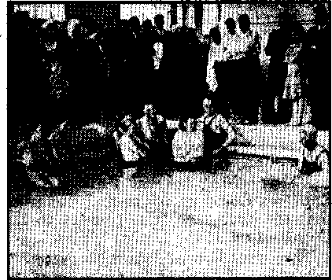
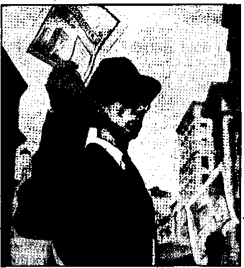
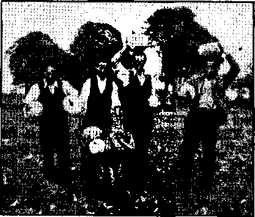

tIHIIItlilllllllllllJll
Street
City
A Special One-month Offer

State
Jehowkh’s'^kingdom message IN BOOK form
32

The New Government
Moscow, Idaho, Returns to U. S. A.
“Foreign Conspiracy Against the Liberties
Facsimile pages from “Foreign Conspiracy, etc.” 26
Catholic Church in Moscow Robbed
British Comment
Published every other Wednesday by WATCHTOWER BIBLE AND TRACT SOCIETY, INC.
117 Adams St., Brooklyn, N. Y., U. S. A.
Editor Clayton J. Wood worth
Business Manager Nathan H. Knorr
Five Cents a Copy
$1 a year in the United States
>1.25 to Canada and all other countries
NOTICE TO SUBSCRIBERS
Remittances: For your own safety, remit by postal or express money order. When coin or currency is lost in the ordinary mails, there is no redress. Remittances from countries other than those named below may be made to the Brooklyn office, but only by International postal money order.
Receipt of a new or renewal subscription will be acknowledged only when requested. Notice of Expiration is sent with the journal one month before subscription expires. Please renew promptly to avoid loss of copies. Send change of address direct to us rather than to tho post office. Your request should reach us at least two weeks before the date of issue with which it is to take effect. Send your old as well as the new address. Copies will not be forwarded by the post office to your new address unless extra postage is provided by you.
Published also in Afrikaans, Bohemian. Danish. Dutch, Finnish, French, German, Greek, Hungarian, Japanese, Norwegian, Polish, Portuguese, Spanish, Swedish, Ukrainian; also special Australian edition in English.
OFFICES FOR OTHER COUNTRIES
England 34 Craven Terrace. Rondon, W. 2
Canada 40 Irwin Avenue. Toronto 5, Ontario
Australia 7 Beresford Road, Strathfield. N.S.W. South Africa 623 Boston House, Cape Town
Entered as second-class matter at Brooklyn, N. Y., under the Act of March 3, 1879.
♦ How fitting are the words of Samuel Morse, American inventor of the telegraph, in 1832, at this very hour! “Watch the [changeable] shapes of Popery, to suspect it most when it allies itself to our interests in the guise of friend.” Jehovah’s witnesses have had the truth of that warning brought home in their case: the Jesuit Hierarchy, posing as defenders of the United States against Nazism, had their agents denounce Jehovah’s witnesses, and, without trial, sot upon them violently and furiously. Of the outrages committed, the American Civil Liberties Union publication of January, 1941, The Persecution of Jehovah's Witnesses, by appropriate subtitle refers to these as “The record of violence against a religious organization unparalleled since the attacks on the Mormons.” Thus “in the guise of friend” Popery is today assaulting America's truest friends! The purpose of the information given here is not to recount history, but to sound another warning. At the instance of the Devil, who is their father, the Jesuits are desperately fighting against The Theocracy, otherwise called the kingdom of heaven, or of Christ Jesus. In this dire hour, when destruction stares mankind in the face, and their only protection lies in seeking The Theocracy, it is of vital importance to warn the people of their enemies. Though named after Jesus, the Jesuits are among those who not only refuse to enter The Theocracy but hinder the Catholic people from so doing: “for ye shut up the kingdom of heaven against men: for ye neither go in yourselves, neither suffer ye them that are entering to go in.” (Matthew 23:13) These words of Jesus alone condemn the “Society of Jesus” as enemies of His kingdom. It is therefore in the interests of the Catholic people especially, who may consider the Jesuits friends and brethren, to warn them by submitting ample evidence of the iniquity and treacherous cunning of this religious gestapo.—Elton Groves.
“And in His name shall the nations hope.”—Matthew 12:21, A.R.V.
Volume XXII Brooklyn, N. Y., Wednesday, June 25, 1941 Number 668
THE Jesuits, name given the members of the Catholic “Society of Jesus”, are the secret police of the Papacy. In this capacity of espionage agents for the Roman Catholic Hierarchy they have been the scourge of Europe and also of the Americas for the last four centuries, since their founding. The past crimes of the Jesuits, and their resulting expulsion from many countries, are but briefly touched upon in this article, as the subject received full discussion in previous issues of Consolation. It is the present activities of this organization that chiefly concern us; and their menace to the United States, now so imminent, and so clearly warned against by famous Americans in the past. See Notanda, page 2.
Brief History
The “Society of Jesus”, official name of the order, was founded in 1540 by Ignatius Loyola, wounded and fanatical soldier of the pope. A bitter reactionary, he proposed to destroy the Protestant Reformation just then making itself felt on the Catholic world. Luther had started a great movement against Romanism in Germany,; Zwingli’s new thought had fired Switzerland; Latimer, Ridley, and Cranmer perished in flames in the English Inquisition of Alary, some fifteen years later, in testimony to the new Protestant faith. The horrible massacres of St. Bartholomew’s Day, when the blood of the Protestant Huguenots ran in the gutters of Paris; the dispatching of the Spanish Armada, a vicious but unsuccessful assault upon England defeated in
JUNE 25, 1941 ■
1588; and the Gunpowder Plot to blow up Parliament and King James I, were all acts in furtherance of the conspiracy to destroy the lieformation. These terrible deeds were some of the first fruits of the counter-Reformation “Society of Jesus”. .
Since then the bloodshed resulting from the intrigue and treason fomented by this criminal body has reddened the rivers and soaked the sod of both the Old and the Xew World. Nor has their purpose changed. It has been and ever will be the extermination of all protest against Roman Catholicism, or interference with her announced purpose to rule the world. The Scriptures plainly foretold the rise of this cruel religious power,, dominated by7 the Jesuits; therefore it must be so.
Such hateful crimes caused new definitions of terms describing the Jesuits to be written:
“Jesuitic or Jesuitical: 1. Of or pertaining to the Jesuits or their principles, practices or methods.
“2. (Z.c.) Designing; cunning; deceitful; crafty.”
“Jesuitism: 1. The principles, doctrines’ or religious organization and practice of the Jesuits.
“2. (Z.c.) The principles or practices ascribed to the Jesuits; Jesuitry; hence, a quibble; equivocal act or statement;—an opprobrious use of the word.”
“Jesuitry . . . subtle or dissembling argument or practices, as the practice of mental reservation, action on the principle 'that the end justifies the means.”—
3
Webster’s jVcw International Dictionary, 1927 Edition, page 1161.
Tn Spanish countries, where they lejl the Inquisition of terrible name, the term Jesuit (Jcsuita) has come to mean “cruel” and is used to express contemptuous hatred.
Such is the infamy that they are striving so hard to wipe off the pages of history today. But there is no change in blackhearted purpose today or any day. The documentary evidence submitted below corroborates their evil past, and proves their present aims unchanged.
Jesuitry Dominates Catholic Church
“An outstanding Catholic historian, Josef Sehmidlin, draws a clear picture of the different factions which existed within the Catholic chureh towards the end of the 19 th century, and how victor;' for the intransigent (uncompromising ) Jesuit party led to the rise of Fascism.” (The Converted Catholic, November, 1940)
Schmidlin further show's that the Jesuits arc the most reactionary of all Catholics: that is, favoring a return to the old system of Rome wdiich freely used the rack and torture system to crush opposition. There are many liberals in the Catholic Chureh but they have no voice in running Catholic Action today.
Many of them perished in blood purges. Dr. Klausner, head of the liberal Catholic Center party in the Reich, was killed in Hitler’s purge of 1934, shortly after his party folded up. Nazi and Fascist persecution of liberal Catholics, which has been done,with the full approval of the pope and Jesuit council, furnishes some color to the delusion that a grim struggle is taking place between the Papacy and Nazi-Fascism. Tt was this liberal group, so hated by the Jesuits, that Mussolini denounced as “a certain vacillating Catholicism with which we will know how to deal”. Americans are pointed to these. Jesuitic outrages as ■'proof that the pope is fighting valiantly against powerful dictators, who persecute his “children” ’. This is a first-class example of Jesuit cunning.
The device is so subtle that the people of the United States, both Catholic and Protestant, arc blinded to their greatest danger, the Jesuit-controlled Hoihan Catholic Hierarchy, bent on world domination, and backing the bloody dictators to that end.
So well has this trick worked, and so completely has the American press been forced into line by Jesuit pressure, that few Americans will believe it when told that there is no persecution of the Catholic Church in Germany. Catholics have suffered and been killed,'yes, but the ruling faction, the Roman Catholic Hierarchy, sees eye to eye with the dictators, even in this. On this point a few copies of The Converted Catholic, 229 W. 48th St., New York City, edited by a former Roman Catholic priest, who possesses a thorough knowledge of Jesuit methods, will convince the most skeptical. The address of this magazine is given here, as it has been boycotted from the streets of New York through Jesuit intimidation.
According to the confessions of Thyssen, munitions magnate who had some part in Hitler’s “election”, von Papen, Jesuit-trained diplomat, at present German ambassador to Turkey (Ankara), and Pacelli, then Papal secretary of state, and now Pius XTL, maneuvered Hitler into power. The purpose was to have Hitler accomplish the Jesuit ends of long standing.
It, can be safely said that. Nazi-Fascism and Jesuitism, the two greatest reactionary forces in the world today, are but two facets of the same unity—one'civil, the other ecclesiastical. . . . Nazi-Fascism’s anti-Semitic ideolpgy, its anti-Masonic and anti-deinocratie activities, its propaganda methods, the hierarchical structure of its organization, and even its war program, were copied from the Jesuit order.
Hitler, Goering and Goebbels and the greatest part of the highest officials of the Third Reich are Catholics by birth and education.
Hitler was trained by the Christi an-Socialist Party and by the Jesuit-controlled Congregations of Mary. Goebbels was once the treasurer of the Barromean Association, which is also controlled by the Jesuits.—The Converted Catholic, November, 1940, issue.
Bishop Rarkowski, field bishop of the German Army, in a letter addressed to German soldiers of Catholic faith, congratulated them on “the Christian attitude they have maintained on the field of battle”. He clearly discloses both the Jesuit aims and Hitler’s agreement therewith:
“The German nation,” Bishop Rarkowski stated, “which has been waging war against those who env[ied] it for years, has an un^ troubled conscience and knows which nations have burdened themselves before God and history with the responsibility for the gigantic struggle now raging. It knows who wantonly unleashed the fury of this war. It knows that it is waging a just war. . . . Abroad and at home the Fuehrer's thanks to God that his plea for His blessing for our good and just cause was expressed more than once, and was understood.”
This bold blasphemy was reproduced in an Associated Press dispatch, and published in the New York Times and other papers of October 5, 1940.
Those who know the aims and history of the Jesuits will recognize the above as a Jesuit prayer : Hitler is praying for the subjugation of England, chief remaining obstacle to the re-establishment of the “Holy Roman Empire of the German Nation”. The ancient dismemberment of this empire was made official at the Peace of Westphalia, ratified at Munster and Osnabruck in 1648. Many will remember Hitler’s boast of last year that he would bring German enemies to historic Munster, for the imposing of Nazi terms. He plans to wipe out the victories of the Reformation, guaranteed by the terms of this treaty. The defeat of England is required to achieve the Jesuit goal. Rome’s ancient ascendency, political and reli-JUN£ 25, 1941
gious, must be restored. Such is the Nazi-Jesuit aim, foretold in the Scriptures. (2 Chronifeles 20th chapter; Revelation 13th and 17th chapters. For explanation see Conspiracy Against Democracy.)
Jesuit Tactics
Anti-Semitism, Jewish pogroms (riots), annihilation of Masonry, restitution of Catholic orders and religion in the schools such as recently done in France, retaliation upon relatives of those who have incurred Nazi displeasure, confusing propaganda such as so effectively employed by Goebbels, and use of the fifth column, are all tricks out of the Jesuit bag. The fact that they work so effectively shows that they cannot be despised. Nor will a few examples arm the people against their devices; for they employ as many varieties of deception as can be brought to their minds by Satan, the Master Liar.'—John 8:44.
The brilliance of Jesuit cunning can be judged by the results. Although Hitler’s objectives are well understood in Europe, Americans generally are kept ignorant. Here only the Hierarchy and leaders in Catholic Action are apprised. The people are jostled along like sheep to the slaughter. The blackhearted leaders of the Papacy are herding the people into the international slaughterhouse where the rosary and all other religious incantation is invoked to no avail. And even to the grave their religious betrayers follow to mutter some meaningless phrases that the Lord will not hear, and the victim can never hear. (Proverbs 28: 9) This grand-scale betrayal to death could be so successful only through the aid of Jesuit cunning. [See also page 21]
On All Sides
One of the tricks often employed to confuse is to have Jesuits advocating both sides of a question. Of course, no real effort is made to accomplish victory for the side adverse to the pope, but lots of talk will often divert enemy attack.
Thus in Germany and Italy the Hierarchy and the pope are solidly behind the dictators, while in Ameridh they are represented as the helpless victims of the dictators. Another illustration is their conduct about free speech. In June, 1939, a group of Jesuit-inspired Coughlinites left a picket line formed around Radio Station WMCA in protest for free speech for their leader, in order to march over to Madison Square Garden to try to break up an assembly of Jehovah’s witnesses. Thus they left a demonstration of their own favoring free speech for their unprincipled fuehrer, for the purpose of destroying free speech for those whose lawful character has been upheld by the Supreme Court of the United States.
Many Catholics are convinced that such measures are all right. They fail to see that freedom of speech does not mean freedom only to speak what the pope wants spoken; and its loss will be their loss as well. Many Catholic newspapers busy themselves shouting for free speech for Coughlin. These same institutions have resorted to mob violence to prevent Jehovah’s witnesses from telling the people of the message of Jehovah’s kingdom, otherwise called The Theocracy. Their acts prove them both inconsistent, vicious, and the enemies of mankind, whose only hope is this kingdom.
The people of the United States generally know that "hate” bills have been introduced in many state legislatures, whose similar language plainly shows that they proceed from the same source. The object of these bills, cunningly devised to appear as attempts to stop attacks on race or religion, is admitted to be the silencing of Jehovah’s witnesses. In answer to these methods, Jehovah’s witnesses have taken advantage of their privilege of laying the facts and the danger before the people of these various states. The results have been so devastating to the Hierarchy that they have been compelled to back water. To hide their own promotion and introduction of these bills, about which lawmakers are heard to say “The Catholics started this bill to stop 'Jehovah’s witnesses”, the Hierarchy has one of its publications denounce the self-proposed law. This is an old Jesuit trick to defend themselves from the just charges being leveled at the institution stooping to such methods, and at once discredit the integrity of those making the charges. They'can hoot at the accusations and go right ahead getting the law passed. To date, however, they have not had much success, due largely to the alertness of Jehovah’s witnesses.
An example of the above form of trickery is found in the attack on a New York Niate” bill by Coughlin in the April 7 issue of Social Justice. Coughlin denounced the bill on grounds such as the following: "Thus a public display of that ‘emblem’ (the cross) might be interpreted by some anti-Christians as ‘offensive’ and ‘inciting hostility’.” “Likewise, it would be illegal for a clergyman to either say his beads in public, or read his breviary on a car or train.” The Hierarchy had become pretty hard-pressed by the warnings sounded up and down the land by Jehovah’s witnesses. Of , course, they had no fears of Catholic persecution, but the exposure made a move to cover up badly needed.
No doubt taking their cue from this editorial, a fanatical group of Coughlinites presented themselves before the Minnesota legislature, where a similar bill was under consideration. An eyewitness stated: “Minnesota legislative committee held a ■ hearing at which ‘Warning’ (presented by Jphovah’s witnesses) was duly read. The local'company’s attorney, friendly, spoke on his own initiative against the bill. During that speech a crowd of Coughlinites broke in on the committee and began their usual roughneck tactics, attempting to heckle and otherwise show off. Their spokesman claimed to be ‘against’ the bill and demanded a public hearing. The chairman promised to consult all members of the committee subsequently as to holding another hearing, and then to notify the Coughlinite spokesman and also Jehovah’s witnesses and their attorney.” This Coughlin demonstration was plainly all show. Can one imagine a Coughlinite being indicted under this or any similar law? The fact that such hoodlums are not in jail shows this to be a generous country, so far as Catholicism is concerned.
In passing, it would be interesting to know how George Washington or Abraham Lincoln, staunch Protestants, would have dealt with a bunch of rabble who violently interrupted a private session. When hooligans are treated with deference by legislative bodies, it shows to what depths of depraved fear before the Hierarchy many lawmakers of this country have fallen.
A few more examples will suffice to give some insight into this black craft. The pope recently blessed the Italians that flew to England and bombed the Royal Palace. The king and queen narrowly escaped, and were congratulated by the pope! The; pope orders all Germans and Italians to be loyal to their respective dictators. Then to the world is flashed the news that he is not leaning to the dictators, but, on the contrary, that the Catholic church is suffering harsh persecution. That would mean that Hitler and Mussolini are persecuting the “church” organization at which they both worship, and which they have granted first privileges in every land conquered. When Britain made known through the Vatican that if either Athens or Alexandria were bombed, she would retaliate by bombing Home, with Vatican City probably in line of fire, you will remember from the news that ally Hitler carefully avoided all bombing of the two cities. However, Home and Vatican City will both go down when the Lord strikes. H. G. Wells, famous English writer, is incensed over the present immunity of Rome. He makes plain his conviction that it ought to be attacked, in his article “Why Don’t We Bomb Rome?” (Published in the Sunday Dispatch, January 19, 1941, England. This remarkable article is referred to on page 31 of this issue.)
The pope has concordats with both Hitler and Mussolini, and none with England or America, with wThom concordats are impossible because of the freedom of discussion. The dictatorships suit the Hierarchy perfectly because in them her actions are not hampered by any of the freedoms she so much detests.
Another hullabaloo to cover up complicity and also have excuse to smash enemies is the Catholic screech against Communism. Jehovah’s witnesses are called Communists and subversive fifth columnists, and this in spite of the facts and a Federal Bureau of Investigation report to the contrary. Jehovah’s witnesses are the only true Americans, fighting to worship Almighty God according to the dictates of our own consciences, even as our forefathers did. They tried to preserve the results of that fight by incorporating the liberties fought for in the Constitution and the first ten amendments, known as the Bill of Rights. The very first of these amendments is, briefly stated, for this purpose: “insuring religious freedom, freedom of speech and of the press, and the right peaceably to assemble and petition the government.” (Winston’s Simplified Dictionary, page 1248, under “Amendment”)
Three Supreme Court decisions affirm the rights of Jehovah’s witnesses to go from door to door, tell the people of Jehovah’s kingdom, and to use the phonograph for this purpose. (Lovell, Schneider and Cantwell cases) Solicitor-General Biddle publicly denounced by radio the mob violence practiced, upon these true Christians. But the attacks go on and the government does nothing. The reason was stated by Jesus: “And ye shall be hated of all men for my name’s sake: but he that shall endure unto the end, the same shall be saved.”—Mark 13:13.
Furthermore, Communism is merely another name for Nazism. There is a workable understanding between Communism and the Papacy. (See “Face the Facts”, delivered in London, September, 1938.) In corroboration the New York Times, October 6, 1940, says editorially, under the title “Leath of an Illusion”:
Rarely does history provide such dramatic irony as in the coincidence that on the day that Neville Chamberlain finally passed from the political scene Signor Gayda informed the readers of the Giornale that the differences between the supposed enemies, Communism and Fascism, were not, after all, so very great: that there were indeed “affinities of inspiration and application” between them. As late as the Spring of 1939 the argument was common in Tjondon that, repellent as it was, Fascism (in its Italian and German forms) was preferable to Communism, the assumption being that the two were mortal foes and that the free nations could choose between them.
The acceptance of this thesis in influential quarters throughout the democratic world represented Hitler’s greatest propagandist triumph. ITe had been thundering it forth for years. It had got him into power in Germany. It likewise served his purpose abroad. . . .
Even after the war had begun, the fear of Communism was exploited by the Nazis, though in slightly altered arguments. They then said that if peace were not soon made with Hitler, Germany might go Communistic. But by that time Nazi reasoning was losing its persuasiveness; and the Nazi onslaught upon the Western democracies destroyed the great illusion of Hitler and Mussolini as twin St. Georges saving Western civilization from the Communistic dragon. But the Communist bogey had served its purpose, and now at last it is cast aside even by the Fascists.
Several years before Judge Rutherford pointed out that Communism was a Catholic ‘bogey’ designed to frighten the people to Nazi-Fascism. A recent joke has circulation in official quarters: “What will Stalin do w’hen Germany tackles Turkey?” Answer: “lie doesn’t known Hh hasn’t got his orders from Berlin yet.”
The news of May 15 tells how “Good Marsha] Petain”, so highly approved by the pope, called upon the 'French people to “ T5owr to Hitler to "Wipe out Defeat.’ ” “Petain intimated that France must come to an understanding w'ith Germany [Papal Sword],'and has chosen 'collaboration’ with the Axis both in Europe and Africa, convinced that Germany will win the war and that France’s fate rests with Berlin.” (LLP., Dally News, May 16, 1941) It seems that Petain must have received another order from the pope.
Instead of being neutral the pope is “in the fray”, according to his official announcement. “In an editorial taking the whole of its front page, the Osservatore declares the Pope is far from being a ‘neutral or impartial power.’ Those who think he is looking at the conflict from the loftiness of his position as head of the Catholic Church are mistaken, it says. Far from being aloof, he is greatly concerned with present events and very much 'in the fray’ to seek a triumph ,of his conception of a Christian peace, the newspaper adds.” (The New York Times, March 12, 1941) Anyone with intelligence can well understand that the pope’s “conception of a Christian peace” would not contain any favors for England.
Jesuits in America
The last several issues of The Converted Catholic contain much evidence of the complicity of Jesuits in the betrayal of the countries in advance of Hitler’s legions and panzers. But return to the record of this infamous order in ikineric.a, where we are more immediately concerned. According to the Catholic Official Directory of 1938, there are 6,008 Jesuits in America. Their headquarters, called the “General Motherhouse”, is at Rome. Here these spies regularly report. ’These six thousand men are trained in demonized cunning. Under their charge are countless thousands
who do their bidding without question. The Knights of Columbus are directed by the Jesuits; and their alleged oath, on one occasion printed in protest in their behalf in the Congressional Record, suggests Jesuit origin. _ _
They also have an organ for disseminating propaganda, the magazine America, published in New York. That publication fulminates abuse against Jehovah’s witnesses, and, less openly, attacks democracy and Protestantism. With a record for crime surpassing any other •organization on earth, they had the temerity to invite both presidential candidates, President Roosevelt and Willkie, to a “Solemn Pontifical Mass Sept. 29 commemorating the 400th anniversary of the Society of Jesus”. (New York Daily Mirror, September 13, 1940) Always playing both sides.
Just what kind of goods the Jesuits deal out can be judged by the following: “From the very inception of the Spanish War, the American newspapers have misrepresented the situation in Spain. The set-up there is in reality quite simple. A Red clique controlled by Moscow attempted to establish a Soviet Government.” (John A. Toomey, S.J., Propaganda in the Press, p. 3; America Press)
On this point Van Paassen, Dutch journalist, is quoted, and his words are corroborated by the Catholic writers De Semprun Gurrea, Maritain, Berna-nos, Bergamin, and Lawrence Ferns-worth: “What Franco was doing in Spain, the Duke of Alva and the Cardinal de Granvelle had tried to do in the seventeenth century in Holland and Flanders [just what Hitler has now accomplished], and Catherine de Medici [niece of the pope] and the Due de Guise in the savage night of St. Bartholomew’s in France: Franco and his cohorts desired to slip the black collar of servitude back on the necks of the Spanish people who had just thrown it off.” (Days of Our Years, pages 466-7) This same Franco, who did the Hierarchy’s bidding in Spain, is now backing up a Mexican-JLNE £5, 1941
Fascist clamor for the “restoration" to old Spain of Texas, Arizona, New Mexico, Philippine Islands, etc. (Washington Times-Herald, December 1, 1940) Perhaps this is “Franco’s way" of thanking this country for the fifteen million loaned his government.
As a matter of fact the determination of the Vatican to reduce Spain by force was predicted in a remarkable letter of the archbishop of Toledo, published in The Kourier, Ku Klux Klan publication, issue of September, 1933. The headlines read: “Romanists to War on Spain. Priests Resent Being Pried Loose from Fat Livings.” “ ‘The new primate, who is assuming the leadership of the Spanish church in the darkest hour of its history, called upon the faithful to offer passive resistance to anti-ecclesiastical legislation,’ says the letter of the archbishop." Says The Kourier, “The new primate of the Catholic Church in Spain has just declared w’ar on the Spanish Republic.” Mind you the time this was written, 1933, three years before the rebellion led by Franco, and supported by Hitler and Mussolini, whom the pope claims are persecuting Catholicism!
“If these things are true,” you may ask, “why has not some one cried out to warn the people?” The answer is that all cries have been silenced except that of Jehovah’s witnesses. For example, Consolation No. 561 published excerpts from a volume entitled “Confessions of a French Catholic Priest, to which are added Warnings to the People of the United States, by the same author”. It was published at New York in 1837 by D. Van Nostrand, whose firm still operates. Recently the firm wrote letters to Consolation readers denying publication of this book although several existing copies bear their founder’s name; and the book was edited by Prof. Samuel F. B. Morse, inventor of the electric telegraph (1832), whose scientific writings they admit publishing. Plainly their denials are actuated by fear of the Hierarchy.
E xamination has brought another book to light, this one written entirely by Morse, and published by Van No strand & Dwight, No. 146 Nassau street, New York, 1836. This book is a grim warning against the practices of the Jesuits and bears the title “Foreign Conspiracy Against the Liberties of the United States”. It was originally published serially in the New York Observer under the signature of “Brutus”, pen name of Samuel F. B. Morse. This eminent American thought enough of his country’s welfare to risk his life for its safety; and how little his old publishing house has heeded that warning! They have sunk to the ignominy of lying for fear of those he warned against. When such conditions exist throughout America it can be understood why its end is near.
This book, whose warnings appear prophetic in the light of present events, refers to the Jesuit intrigue of the Papal powers in its title, “Foreign Conspiracy Against the Liberties of the United States,” Morse, who spent much time in Europe, learned how the Hierarchy hated the United States, how much they preferred the monarchies governing most of the Continent at that time, and how they denounced “North America” as “nursery of all these destructive principles, the revolutionary school for France and the rest of Europe”. Four-Protestants of as many faiths endorsed tire book in a letter that appears in the preface, and at least four editions were published.
From the railings against this country W’hich Morse recounts, it appears certain that the Papacy has conspired to destroy this nation for more than a hundred years. This extreme hatred very likely dates from the time when the revolutionary spirit fired France in 1789 and the Hierarchy got such a setback as a result. All this was blamed upon America. Also explicitly named as hated was “Protestantism” “the enemy of good government”, and its “ally of Republicanism”. This clarifies the reason why Franco, a hundred years later, was knighted by the pope for smashing Republican Spain. Also appropriate in this connection are the words of Lafayette, declared a short time after the Revolutionary War: “American liberty can be destroyed only by the Popish clergy.”
A fewmore quotations are taken at random from Pore i // n C o n s p i r a c y Against the Liberties o/ the United States:
. . . Popery is the antagonist to our free system.
The secret plans, the real designs of the Jesuits may be confined to few bosoms, it is by no means necessary that the mass of the sect [that is, the mass of the Catholic population] should have any knowledge of the plot; for from the nature of their system they may be blind instruments of the few.
. . . Roman Catholies, as a sect, must be frilling slaves of any despotic eeelesiastie [priest] that a foreign power [Rome] may see fit to send to this country to rule over them.
This makes plain the fact that no matter how good and honest may be the mass of the Catholic people, they have absolutely no effect upon nor any veto or other voice in turning the plans of the Catholic Autocracy. The Catholic Church system is a dictatorship. Those few who dissent are never heard, and more often silenced by murder. The persecution and violence heaped upon Jehovah’s witnesses indicates in language stronger than words the Catholic Church’s answer to opposition.
Samuel Morse evidently knew his danger from Rome when he wrote. His willingness to risk his life to warn his countrymen marks him as a supremely patriotic American. He would likely be one of Jehovah’s witnesses if he lived today; for they alone of all people continue to sound the warning against Romanism. It seems a dismal commentary upon our times, “men’sz hearts failing
them for fear’i (Luke 21:26) that an American publisher would attempt to discredit this valiant warning:
... The writer, entertaining these views, has deemed it an imperative duty, at any sacrifice, to warn his countrymen of a subtle enemy to the democracy of the country, and to conjure them, as they value their civil and religious institutions, to watch the Protean [changeable] shapes of Popery, to suspect and fear it most when it allies itself to our interests in the guise of friend. Mistrust ... all that Popery does. . . .
Authenticity1
In order to crush in advance any denials of authenticity Consolation is publishing a series of photostatic copies (beginning in this issue, on pages 26 and 27) of Conspiracy Against the Liberties of the United States. Ordinarily many copies could be found in this country, as at least four editions were printed; but Jesuit cunning may have done away with most of them. The photostats were made of the New York Library copy which was seen there as late as Thursday, May 22, 1941. .
(
Hatred of Jehovah's witnesses
It is difficult to concentrate on the present alone when considering a large subject like the crimes of the Jesuits. There flash to mind events widely separated in time whose only connection is that they were perpetrated by Jesuits: the execution of a Jesuit for the murder of a French king; the horrible massacre of the Inca and Aztec Indians of Central America and South America by the Jesuit-inspired conquistadores, and the subsequent Inquisition set up there to convert to Catholicism; the assassination of President Lincoln, in which a monk failed, and a Jesuit-trained actor succeeded; the conspiracy against the French in which Alfred Dreyfus, a Jew, was falsely convicted, 1894, and exonerated in 1906, the purpose being to cause a rupture with Germany and give rise to an outburst of anti-Semitism, both of which were effected; the conviction of priests in Italy and Englajid after the first World War for espionage against the Allies. These past events are important but to cast their shadow on this day.
Now the malevolence of the Jesuits is directed primarily against Jehovah’s witnesses. What they do not understand is that Jehovah’s,witnesses are doing a work commanded by Jehovah, even though it appears "strange” to “Christendom”, and those who falsely claim the name of Christ. All the Jesuit intrigue has failed to stop His witnesses, and the Jesuits’ desperation increases.
How fitting are the words of Morse today!—“Watch the [changeable] shapes of Popery, to suspect it most when it allies itself to our interests in the guise of friend.” Jehovah’s witnesses have had the truth of this warning brought home in their case: The Jesuit hierarchy, posing as the defenders of the United States against Nazism, had their agents denounce Jehovah’s witnesses as “fifth columnists”, and, without trial,' to set upon them violently and ferociously. Of the outrages committed, says the American Civil Liberties Union in a publication of January, 1941, The Persecution of Jehovah’s witnesses, in the fitly expressive subtitle, these are “The record of violence against a religious organization unparalleled in America since the attacks on the Mormons.” In “the guise of friend” it is assaulting America’s truest friends 1 See Notanda, page 2.
In the Jesuit magazine entitled America, which is almost as great a misnomer as "Society of Jesus”, the reviling of American principles and of any and all who oppose the Hierarchy, fvith especial malignancy against the only Americans who expose them, continues with unabated fury. It will end. only when Jehovah "shall sweep away the refuge of lies, and the waters shall overflow the hiding place”. (Isaiah 28:17)—Elton Groves.

♦ The street work and public meetings are really becoming known here and the people are beginning to realize that the great Theocracy is here to stay and is filling the whole earth, including Cuba; and we are happy to have a part in such a grand work to Jehovah’s honor.
Having been giving public lectures each week in halls loaned by various clubs, lodges, etc., we began inquiring in a little town near by for permission to use the club house on Sunday; but the owners, being religious, refused it. So we worked the town anyway and invited the people to a vacant lot favorably located and put the transcription horn on top of the car, as we do not have a soundcar, and several attended. A church is in building at the site selected.
Last week we were working in a small town about fifteen miles from Havana, and one of the publishers played the phonograph for a cop and presented the literature, among which was a Judge Rutherford Uncovers Fifth Column. Then, about an hour later, as we were all in the car to come home this cop comes up and says that he has an order to bring us all in to the station; so in we go, all seven of us, with the cop riding the fender all the way to Havana! In the station we played the phonograph’to 13 eops, two manifesting themselves as Catholic, one as Baptist, one as atheist, and the rest not at all. One of the Catholics nastily said, “How much did you say you sold this book for?” and when answered, he replied, “You can't sell books here without a permit.” To this the Baptist cop, a very young kid, said, “If you’d spend 25c for one of those books on the Bible, instead of spending it on candles for some image made of stone and wood, it would be better.” The Catholic got very angry, replying that he could buy candles if he wanted to; which almost resulted in a fight, till another policeman pushed them apart. We were highly entertained at the expense of Satan’s sons.
We were informed that we’d have to wait for the captain; so wait we did. When he came, again we played “Enemies”, and he said, “There’s nothing against us there, but you’ll have to wait for the chief,” So again we waited, about an hour each time. It was five o’clock before he came, and we hadn’t eaten since morning and I was about to die of hunger, the tremors of my vitals shook the walls, almost. The chief, literally bursting with importance, glanced at the books, then tosserl them aside with an expression, “And you caused me to waste my oh so valuable time on such as this!” He started to leave, after telling the one in charge to take our names and addresses.
Then up spoke the Catholic with, “But, sir, they also have a phonograph which they use.” The chief, squinting over his nose, says, “What’s that? a phonograph? Well, let’s see it.” Again the marvelous record “Enemies” began, and, since it doesn’t begin to sizzle for about two minutes, he got tired listening and said, “That is enough”; whereupon Papa’s little stooge says, “But hear the rest, sir”; but other more important duties (?) were calling, so he missed the fireworks, sad to say.
We finally got home and to supper, after the Catholic cop made us wait another hour while he called the station nearest our house to see if we really and truly lived there or not. Then the cop sent to investigate called back with the statement that there was no one home! Imagine! But how could we be, when we were in Station 14? Again we waited while he went again to investigate! I couldn’t help telling him that he’d find a little white dog named Chica and a
Theocracy publishers, Havana, Cuba
little black eat named Pinocho in the patio, if he wanted to be sure.
One policeman was very nice, and, when he asked why I was in such a hurry to go home and I told him T was hungry, he was sending a boy to buy bananas, and T had a hard time telling him that they would spoil my supper.
While we waited 1 thought, “The representatives of two governments clash! —a great, just and righteous government of the great Tbeocrat and the abominable mimic theocracy of Satan; and many, many thanks to Jehovah that I and my house are representatives of Jehovah's Theocracy.” They really had a warning, and were told so by one publisher upon the remark by the atheist that In; didn't believe in Christ because Christ was in heaven; to which the brother replied that Christ was also there in the station ; and had him read Matthew 25:31, where Christ would divide the “sheep” from the “goats”; that Christ was at that moment dividing them by JUNE 25, 1941
calling the Theocratic message to their attention. Thanks for the privilege of declaring the Truth.—-Muriel and John Bourgeois, pioneers, Cuba.
Moscow, Idaho, Returns to U.S.A.
♦ Federal Judge C. C. Cavanah today declared Moscow’s handbill ordinance regulating the distribution of literature on downtown streets to be unconstitutional. The ordinance “strikes at the very foundation of freedom of the press”, the veteran jurist declared in overruling a motion that an action against the city be dismissed on grounds that the ordinance was constitutional.
“This is so clear to me, gentlemen, that it isn’t even involved,” the judge asserted, after citing several United States Supreme Court decisions and declaring that the ordinance runs counter to the Constitution of the United States.
Three members of Jehovah’s witnesses lodged in jail April 14 for violation of the ordinance and failure to pay fines were ordered released immediately after the opinion was read. They were George Narum, Mrs. Della Campbell and Marie Logan, all residents of Moscow. A fourth member, Carolyn Grenz, was released several days ago after serving out a smaller fine,
Weldon Schimke, former city attorney, during whose term of office the ordinance was enacted and who has represented the city in the case, advised the court that the city would not appeal the decision.
He said the Jehovah's witnesses will be released “as soon as I can get to a telephone”.
Harve Phipps, Spokane, acted as counsel for the plaintiffs, Jehovah’s witnesses and the Watchtower Bible & Tract Society, in the action to enjoin the city from enforcing the ordinance. He also submitted a brief prepared by Benjamin H. Kizer, Spokane attorney, for the American Civil Liberties Union of New York.
The ordinance was put into effect here last March with the explanation that it was aimed at controlling “distribution of subversive literature” on Moscow’s downtown streets. It required that an individual need secure permission from a Moscow7 police officer by saluting the American flag and pronouncing the oath of alle-
B apt ism at Boise, Idaho, Theocratic; convention
Two pioneers in the interior of the State of Sao Paulo, Brazil, parents of four little ones ranging in age from 1 to 7. They manage to devote their energies to the service of The Theocracy, at the same time fulfilling their earthly obligations to their children.
glance before selling or giving away printed matter.
Only members of Jehovah’s witnesses were arrested for failure to comply with the regulation. According to their testimony, given at subsequent police court trials, their religion demands that they pledge allegiance “only to God”.
Declaring that the ordinance provided a “censorship on one engaged in distributing pamphlets”, Judge Cavanah said that “under this ordinance even a newsboy would have to obtain permission to sell papers”.
“It has never been regarded as inconsistent with civil liberties to grant to a city authority to impose a regulation in order to insure convenience, cleanliness, sanitation, preventing obstruction and safety of the people in the use of the public streets."
He pointed out, however, that the city is not empowered to abridge the individual liberties offered by the Constitution
Holding high the banner of truth in Boston, Mass.
to those who wish to speak, write, print or circulate information in an orderly fashion.—The Daily Idahoan, May 14, 1941.
♦ Sir—In the Daily Telegraph of Jan* nary 17 we read that the Commonwealth of Australia and the Dominion of New Zealand have declared ‘"Jehovah's witnesses” an illegal organization on account of their pacifist tenets. In my opinion, the sect in question is in error. Nevertheless, .1 am filled with dismay and disgust by the action of these governments. All men have an inalienable right to worship God both individually and corporately according to the dictates of their conscience. No State has the right to interfere with them in doing so, thereby intruding into the sphere of religion and conscience and setting itself between God and souls. The action of these governments is pure totalitarianism. It is, in short, the very thing we profess to be fighting against—Hitlerism. In fact, to proscribe Jehovah’s witnesses was one of the early measures of the Nazi go ver n-
JUNE 25, 1941 ment, so that the Commonwealth of Australia and New Zealand are literally following in the Fiihrer’s footsteps. It will avail nothing to win the material war against Hitler if he defeats us spiritually. British Christians, therefore, should combine to address a protest to the representatives of Australia and New Zealand in this country, and demand the withdrawal of this persecuting measure. To these governments, no less than to the Nazis, we must repeat Milton’s indignant words: “Dare ye for this adjudge the civil sword to force our consciences that Christ set free?”—Liberator, in London Guardian, January 31, 1941.
♦ One lady, a Polish refugee, told me how her brother had been in a concentration camp in Germany’ along with several of Jehovah’s witnesses, and how every morning they7 were brought before the camp superintendent and asked, “Do you accept Hitler or do you still want your Jehovah?” The answer was always the same; they7 preferred Him who is supreme; and the narrator said he had never seen a finer set of people.-—Norman E. Walker, pioneer, England.
Market garden squad, Essex Kingdom Farm, England, bringing home the pumpkins {To be continued) la
SUNDAY afternoon June 1 was a happy day at Kingdom Farms. The occasion was the opening for inspection by neighbors and friends of the new building that has been in course of construction during the past year. Kingdom Farms are situated near South Lansing, on Highway 34. Last summer Kingdom Farms Association began construction of a building near the highway. Little was said about what was the purpose of the building, and there? was much speculation by those who evidently knew nothing about it. The construction being practically completed, neighbors were invited to come Sunday afternoon at three o’clock June .1. and inspect it. Although there was no advertisement, except by word of mouth passed from one to another, between seven and eight hun-, dred persons assembled there at the hour appointed. Among those present were noted professors and their wives from Cornell University, merchants from Ithaca and South Lansing, doctors, the sheriff, and many neighbors round about. The reception was pleasant and conducted in a very orderly manner and everybody seemed to be delighted. The building is 130 feet by 82 feet, consisting of a basement and three stories above the basement. It is constructed of cement reinforced with steel, and with face brick. The construction is very high-class. One of the best-known engineers of New York city, who does a great deal of engineering work for the Government, drew the plans and superintended the construction.
The visitors were admitted into the basement first, and, in brief, this is what they saw: On the left of the rear entrance the heating plant and drying room, the pressure tank, water supplies and storage place; on the right, the laundry, the lavatories, for the use of the men who work on the farm, and the rooms for the treatment of the sick, with modern equipment for that purpose. A 16
stairway then leads up to the main hall or dining room. This room is 82 feet by 108 feet, with cement floor, painted and beautifully lighted. All the windows in the entire building are steel-framed and glass; likewise the door frames. Just off the dining room is a modernly equipped kitchen; on the opposite side, a sewing room, where the mending is done. This main room is to be used as a dining room, and a meeting hall for Bible study, Bible class instruction, and for the regular place of worship. In the front part of the building are the offices and a store, where will be kept a supply of general merchandise to be used by farmers or othfers round about who might need something in this line.
The two floors above are constructed entirely for bedchambers. There are two wings; this with an open airwmy between the wings, which makes every room in the house an outside room, far better ventilated than most of the rooms in the city. The airway between these two wings has a solid cement floor, which is waterproof, and in pleasant w'eather can b(* used as a place of recreation. On each floor there are bath and toilet rooms, both for males and for females, separate, of course.
As the audience entered many were heard to express themselves in pleasant surprise to see such a beautiful construction, plain yet airy and pleasant. It is certainly an ideal country place; and when the speaker of the occasion described the purpose of the building everyone could see how well it had been arranged. Kingdom Farms are owned by the Watchtower .Bible and Tract Society, a New York corporation which holds title and operates the place in the interest of Jehovah’s witnesses. These witnesses are described by one of their number as men and women who are wdiolly devoted to Almighty God and His Kingdom, and, being witnesses for the name of Jehovah and His Kingdom, they
CONSOLATION
are called Jehovah’s witnesses. It appears that they have come from all religious denominations, Catholic, Protestant and Jew, and united themselves in one purpose. The president of the Watchtower Bible and Tract Society was present and extended a welcome to all those who had come, and made a brief speech, outlining the purpose of the Farms and the buildings. John Bogard, the superintendent of the Farms, presided and, in opening the meeting, said: “Friends, the prime mover for the improvement of this place is the president of the Watchtower Bible and Tract Society, Judge .Rutherford, and we are glad to have him present today to welcome you.”
Judge Rutherford then addressed the audience of practically 800 people, and the substance of his speech was this:
It is a real pleasure to welcome you here on this occasion. It is not my privilege to know all of you personally, but you are our neighbors, and a good neighbor is always to be desired, This farm and its building has called forth many idle and exaggerated expressions as to its purpose. Probably you have all heard of these expressions by those who are not informed, to the effect that we are here building a place for war purposes. If you will bear with me I shall be glad to tell you the real purpose for the erection of this structure. I assure you on the outset, it is built for a good purpose, with the hope of doing good to all as we have opportunity, and to do evil to no one.
American Freedom
Kingdom Farms, and this structure, are owned and operated by persons who believe in God and Who are wholly devoted to God and His kingdom. The early settlers of Amer-
JUNE 25, 1941 iea left England to brave the hardships of a new country in order that they might find a place where they could worship God without hindrance and freely exercise their conscience. Those early settlers believed in God and in Christ, and believed that the Bible is God’s Word of truth, given as man’s real, true and correct guide. They proceeded to build up on that basis. As they progressed they ineorpo-rated in the fundamental law of the territory or states, which they organized, and finally in the national government, the principles of freedom of speech, freedom of assembly, and freedom of worship of God according to the dictates of one’s conscience. Such have been the fundamental principles of America from then till now. At that time almost all people believed in God and the Bible. Today there are very few, comparatively, who believe in Almighty God, the Lord Jesus Christ as the Redeemer, and the Bible as God’s Word of ' truth. Amongst those who do believe this are the ones who constructed this building. Each and every one on this farm, and who has had to do with it, is wholly devoted to Almighty God and his kingdom under Christ Jesus, the Redeemer of mankind. I remind you that when the Lord Jesus was on earth He stressed the importance of the Kingdom, and He said to His followers who sat by Him on the mountainside: ‘Henceforth, when you pray, always pray to your Father in heaven, and pray for the coming of ■ God’s kingdom, that His will may be done on earth, as it is done in heaven? True Christians have been sincerely praying that prayer since, and have looked forward to and hoped for the coming of the kingdom of God. It is entirely in keeping, then, with the prayer of the Lord Jesus that we should name this place Kingdom Farms, because all connected therewith are devoted to His kingdom, and not only have prayed for the coming of that kingdom, but welcome its coming.
Almighty God knew the end from the beginning; and while He concealed that from men He caused His prophecies to be written and recorded in the Bible, promising that it should be understood in due time, and now in these latter days has brought about facts making clear the meaning of His prophecies. For many years past Jehovah’s witnesses have
been diligently studying prophecies and also diligent in trying to do the will of God.
Jehovah foretold the coming of Christ the King, and this took place in 1914. God foretold that from and after a marked period in the Scriptures, which is A.D. 1918, that trouble would increase upon the earth and would continue to grow worse until the final climax at Armageddon. From 1914 until that time is known in the Scriptures as the transition period, in which the kingdom of God is coming in and the kingdom of the wicked one Satan is passing out. It would be expected that Satan the enemy would be opposed to God’s kingdom and would induce all people to oppose it; and that is exactly what has been going on and is still going on. It has been the purpose of Jehovah’s witnesses to sound the warning to the people, calling their attention to the fact that the troubles in the world are due to the machinations of Satan and his associated demons and that their only means of escapeis by taking their stand on the side of the kingdom of the Lord. It is needless for me to tell this company present that the world is in a terrible state. Europe has gone mad and is being rapidly destroyed. Many other nations are following blindly in the same lead.
“Face the Facts”
At London, England, in 1938, I addressed a large audience at Royal Albert Hall, London, on the subject “Face the Facts”, and pointed out to the British people that Nazism, Fascism, aided and supported by a great religious organization, would overrun the continent of Europe and its purpose would be to destroy the British Empire. Not many people of England accepted that statement at the .time, but today many thousands of them see > exactly those things are coming to pass. That same year, in Paris I addressed a large audience and called attention to the same facts. In Switzerland I likewise called attention to what was coming to pass. There are thousands of good people now in these countries who are diligently serving Jehovah God, and who are witnesses for Jehovah, proclaiming His name and His kingdom, and this would aid and comfort many sufferers. At my instance our friends in London purchased two farms about -
forty miles out from the city, and these farms have been operated since to raise food to feed many who need help, and buildings have been erected on them as a place of refuge, and many have been served there. In Switzerland also our friends acquired two farms, which have served as a refuge for many who have fled from Austria and Czechoslovakia, and a few that have escaped from the terrible conditions in Germany. We had acquired property in Germany, and built that up for the aid of the people, and also in Czechoslovakia and Poland, but the Nazis have made it impossible for anyone who serves Almighty God to use these properties. In Australia and in other places Jehovah’s witnesses have likewise taken a similar course. '
A few years .ago this farm where we ndw are was offered for sale. It was purchased. At the time several buildings for dwelling purposes were already here, which have been occupied, and, seeing from the Scriptures what is coming, and knowing that great trouble is due to America, as well as other countries, consecrated men and women believed it to be entirely proper that we should here attempt to do something to take care of those who are unable to take care of themselves. So a little less than a year ago we set about to erect this present structure. You will note that it is well built, that it is an airy place; although plain, it is substantial. This room in which we are assembled will be used as a general dining room and a meeting room, where we will study the Bible and serve God. You will note here on my left a modernly equipped kitchen. In the front is a stord, where we will have some general merchandise, which we will furnish our friends without any hope of making money, but only for accommodation, expecting to receive the cost of our products. In the wings of the building, in the upper stories, are bedrooms, equipped for the comfort of those who may be housed here. I want you to go through this building, and you will see that the rumors about ammunition and guns are entirely without foundation. You will find that this building is erected for the comfort of those who may need comfort. About the first thing that many will ask is, “Where did you get the money!” Let me assure you that the
money for this building and the farm was furnished by the unsolicited and willing, voluntary contributions of men and women, given out of their own substance, because they love God and His kingdom, and wish to give some outward evidence of their love and devotion to His kingdom. Every effort put forth in the construction of this building has been done, not by hired help, but by men who are wholly devoted to the Kingdom. They have worked, receiving therefor their food and a place to sleep, and, those who needed it, the small amount of ten dollars per month for incidental expenses. Therefore the building has been erected with the least possible expense. The time will come, in the very near future, when it will be necessary to take care of refugees, those who really need help, and we hope to do our part here. Of course, this building and farm is entirely too small to take care of a great number, but this building will stand as a monument to the name of Almighty God and His King, and testify to the fact that the men and women who built it have faith in God, and in Christ Jesus His King, and who know that the Bible is His Word of truth. We expect this building to render good to many; and it may be that some of you as our neighbors will find it necessary to come sometime for help, and we shall be glad to extend it to you in any way we can. We are not here to make money; we do not expect to make any money; we only hope to be able to pay our legitimate expenses. The corporation that owns this property is so organized that no officer or director can receive any pecuniary profit. None, therefore, can make any money out of it. If any profit is derived, the entire amount goes back into the organization for further improvements.
Invisible Ruler
I remind you of some appropriate scriptures. At Proverbs 29; 2 it is written; ‘When the righteous are in authority, the people rejoice ; but when the wicked bear rule, the people mourn.’ That of itself ought to be conclusive evidence that the righteous are not in authority, but that the wicked bear rule. For many centuries the wicked, invisible ruler has been and is Satan the Devil, who has operated
JUNE 25, 1**1 . on the minds of men to cause them to oppress mankind. The righteous ruler mentioned is the Lord Jesus Christ, who shall rule the world in righteousness; and then the people who live shall rejoice and be glad and will dwell together in peace for evermore. All sincere Christians not only should welcome the coming of that blessed time, but should be diligent to tell others about it. For that reason Jehovah’s witnesses have been diligent in going about the country, in all the nations, bearing witness to the name of Almighty God and to His kingdom, and pointing out to the people the Kingdom as the only hope of relief and of peace and the blessings of His kingdom under Christ. They have employed phono graphs, reproducing speeches, have been holding meetings, and publishing books and distributing them to the number of more than three hundred million, published in 88 different languages, the sole purpose being to bear testimony to the people concerning Almighty God Jehovah and His kingdom. They have suffered much opposition; but that is to be expected because all under the influence of Satan and the demons oppose everything’ that is for the kingdom of God under Christ. Jehovah’s witnesses, all Christians, are fully convinced of the truth of the scripture, at Isaiah 32:1, A.B.V., which says: “Behold, a king shall reign in righteousness, and princes shall rule in justice.” The King here mentioned is Christ Jesus, who is now beginning His rule, and who is proceeding to warn the people before He destroys the wicked one; and this warning He is giving through His witnesses wrho go about proclaiming and preaching the gospel. Every man and woman on this place is a preacher of the gospel, duly ordained for that purpose; ordained, not by formalism, but by the Lord himself, as set forth in Isaiah 61:1, 2.
• They are absolutely certain that the prophecies are true and that soon wickedness shall be eliminated from the earth and righteousness shall take the place thereof. You will note the scripture I have just quoted says that princes shall rule in righteousness’. These princes are the faithful men, mentioned in the Bible, from the time of Abel down to the last one mentioned, the prophet John the Baptist, and more particularly described at He-
19 ,
brews the eleventh chapter. These men maybe expected back on the earth soon, because God’s promise is that He will resurrect them and make them the visible rulers or governors on earth who will rule the world under the direct supervision of the Lord Jesus Christ. That will be the righteous rule, a just rule, in whieh there will be no wickedness permitted. Then the scripture whieh says, "When the righteous are in authority, the people rejoice,” will be fully realized and all who live will rejoice and give praise to God and Christ His King. You may expect soon to see standing in this very place where I now stand some of these faithful men, either Daniel or Abraham, Barak or some of those other faithful men, and then you will note that the Kingdom is taking on a visible, active form for the good of those who serve Jehovah.
“Peace and Safety”
The war that is now afflicting Europe and other countries will go on for a time. Some kind of peace will be patched up soon; then those who have to do with bringing about that so-called "peace” will boastingly say; “We have brought about peace and safety.” The worst trouble will then follow. Those who have attempted to rule, and are now attempting to rule in the place of God’s kingdom, will suffer destruction. This will be at the battle of that great day of God Almighty, described in the Scriptures, and otherwise known as the battle of Armageddon, and of whieh Jesus speaks as a time of trouble such as the world has never known, and that will be the last. No one will survive that trouble except those who take their stand on the side of God and His kingdom. It is the privilege of Jehovah’s witnesses to give this warning to the people now in order that they may be informed so that they can seek life, and seek righteousness and meekness, and be spared in that great time of tribulation. It is their delight to do so. They have devoted their lives entirely to it, and they expect to use this house and these farms for the purpose of aiding and giving comfort to those persons who humbly seek the Lord and who strive to do His will and serve Him.
Now I wish to say to bur neighbors that you are welcome to come, at any time you wish, to this place, and if it is possible for us to render to you anything good it will be our pleasure to do so. God’s kingdom, as outlined in the Scriptures, is in striking contrast with the wicked element now that tries to rule the earth. It is always some misguided ones, and who are misguided by religious fanatics, who attempt to do injury to those, who are doing good and advertising God’s kingdom. Some of this misguided element is in this part of the country and has threatened violence against this place. But no honest person approves such. Our neighbors and friends, even though they do not see eye to eye with us, believe in freedom of thought, and freedom of action, and freedom of worship. They believe in honest and sincere treatment of their fellow citizens. I have not had the pleasure of meeting the sheriff of this community, but I am informed that he is a man of this kind, who believes in enforcing the law and does so, and believes in protecting people who are trying to do right. If all officers in this world were like this sheriff here, there would be no such thing as Hitlerism, no oppressive governments, but the people would be permitted to pursue their usual and customary way of living in peace and exercising their right of assembly, and right of worship, without interference? I am convinced that our neighbors and friends fully concur with me in this remark.
Be assured of this one fact: that we who are here on this farm and on this place have but one desire, and that is to do good and serve our God and our King. We are determined to emulate our forefathers, who believed in God and in Christ and in the Bible, and to go straight forward serving the Most High amidst any and all opposition, and to do so come what may. Our forefathers provided an asylum for the oppressed and persecuted, and we have here endeavored to do the same thing.
And now I renew my words of welcome to all of you and ask you to feel free to come, at any time you will, to see us; and be assured of our best wishes toward all who love righteousness.
THE following is an excerpt from “The Life of Samuel F. B,. Morse, LL.D., Inventor of the Electro-Magnetic Telegraph”, by Samuel Irenaeus Prime. (New York: D. Appleton & Co., 1875. Author’s Preface dated July 8, 1874.)
While Mr. Morse was in Italy in the years 1830 and 1831, he became acquainted with several ecclesiastics of the Church of Rome, one of whom, a cardinal, made a vigorous attack upon the faith of the young artist. A correspondence between them ensued, and frequent interviews. Mr. Morse was led to believe, from what he learned in Rome, that a political conspiracy, under the cloak of a religious mission, wms formed against the United States of America. When he came to Paris in 1832 and enjoyed the confidence and friendship of Lafayette, he stated bis convictions to the General, who fully concurred with him in the reality of such a conspiracy. Returning to this country in the autumn of 1832, inventing the Telegraph on his homeward voyage, he never became so absorbed in his invention as to forget the impressions made in Italy respecting the danger to which his country was exposed. The conviction was so strong that he gave much time in subsequent years to the publication in periodicals, in pamphlets, and in volumes, of the facts and arguments which, in his judgment, were important to a fair understanding of the subject. In the year 1834 Mr. Morse published a series of papers, which the year following were issued in a volume entitled “foreign Conspiracy against the Liberties of the United States: Revised and Corrected, with Notes by the Author.” The motto on the title-page was from Spencer:
“ . . . oft fire is without smoke, And peril without show.”
The papers, as they first appeared, were copied widely, and, pervading the whole country, made a deep and permanent impression. The volume passed through numerous editions, and has proved one of the most efficient works that has appeared in that prolific discussion.
In the year 1837 Professor Morse edited JUNE 25, 1941
and published, with an introduction by himself: “Confessions of a French Catholic Priest, to which are added Warnings to the People of the United States, by the same Author.” This volume bore upon the title-page the line, “American liberty can be destroyed only by the Popish clergy.”-—Lafayette. This, declaration was not placed upon the title-page by the editor [Morse], but by the author of the book. It was subsequently challenged, and Professor Morse, though not responsible for the statement, produced the written testimony of living witnesses, to whom Lafayette made the remark.
In the year 1841 a series of papers from the pen of Professor Morse, first published in the journal of Commerce, was issued in a small volume, with the title: “Our Liberties Defended ; the Question Discussed; Is the Protestant or Papal System most favorable to Civil and Religious Liberty?”
In the year 1854 a pamphlet was issued containing a series of papers which Professor Morse contributed to the Journal of Commerce .in 1835. It was published without his name, ■ under the title of “Imminent Dangers to the Free Institutions of the United States through Foreign Immigration, and the Present State of the Naturalization Laws. By an American.”
But these were a very small part of the work that employed the pen of Professor Morse. . . .
♦ According to Otto Strasser, Mein Kampf was written by a priest. This is very likely true, as all Hitler’s speeches divulge him as a man of little education. Strasser, in his book Hitler and I, claims that what Hitler wrote was a series of childish animosities, etc.; and that after Mein Kampf had been written he had the learned Jesuitic author assassinated to prevent any possible disclosures. Whatever the truth, it is certain from its study that both the proposals, the plan of action, and the methods, are taken from Jesuit lore.-—Elton Groves.
SUCH is the astounding title of a volume written by Samuel Finley Breese Morse, world-famed American inventor of the electric telegraph.
The subject matter of the volume was originally published serially in the New York Observer, under the signature “Brutus”. The same material was subsequently revised and corrected, with notes, by the author named above, who at that time was president of the National Academy of Design and also professor of the Arts of Design in the University of,the City of New York. [For other details of' the life and the anti-Catholie attitude of Morse, and the cause thereof, see Scribner’s and other biographies of prominent Americans.]
The “Fourth Edition” of this extraordinary book, titled as shown on first line of this page, was printed in New York city in 1836 by Van Nostrand & Dwight, 146 Nassau Street. According to its title page it was “Entered according to Act of Congress, in the year 1835, in the Clerk’s Office of the district court of the South- ’ ern District of New York”. Until the volume is destroyed or otherwise made inaccessible to the people, at least one copy of it is available to anyone on call at the New York Public Library, Room 300, where it was seen by a member of the staff of Consolation magazine oil Thursday, May 22, 1941.
Striking indeed is the following letter, written at New York on January 1, 1835, by four representatives of as many Protestant denominations, namely, Episcopal, Presbyterian, Methodist, and Baptist, respectively, and by them addressed to the publishers of this remarkable volume. The letter:
Gentlemen,—-Learning that you are about to publish in a small volume, the articles signed Brutus, (which recently appeared in the New York Observer, showing that a conspiracy is formed against the United States by the Papal powers of Europe,) the undersigned, who read those articles with interest, have great satisfaction in expressing their approbation of your undertaking. These articles are written by a gentleman of intelligence and candor, who has resided in the south of Europe, and enjoyed the best opportunities for acquaintance with the topics on which he writes.
While we disapprove of harsh, denunciatory language toward Roman Catholies, their past history, and the fact that they everywhere act together, as if guided by one mind, admonish us to be jealous of their influence, and to watch with unremitted care all their movements in relation to our free institutions. As this work is now to b$ published in a portable form, and with additional notes by the author, we hope it may obtain an extensive circulation and a careful perusal.
Yours, with friendly regard,
James Milnor, N. Bangs, Thomas De Witt, Jonathan Going.
The foregoing letter is published, with others, under “Recommendations” in the forepart of the volume. Among such recommendations are included the expressions of approval written by many outstanding observers of the time.
The following random quotations from the volume will serve to show how clearly its author discerned during the days of his youth, early in the nineteenth century, what today is a menace intensified and enlarged a hundredfold. '
In the “Preface to the Second Edition”, beginning at page 15, appears what fol- . lows, quoted verbatim:
In the year 1828, the Celebrated Frederick fechlegel, one of the most distinguished literary men of Europe, delivered lectures at Vienna, on the Philosophy of History, (which have not been translated into English,) a great object of which is to show the mutual Support which Popery and Monarchy derive from each other. He commends the two systems in connexion, as deserving of universal
reception. He attempts to prove that sciences, and arts, and all the pursuits of man as an intellectual being, are best promoted under this perfect system of church and state; a Pope at the head of the former; an Emperor at the head of the latter. He contrasts with this, the system of Protestantism; represents Protestantism as the enemy of good government, as the ally of Republicanism, as the parent of the distresses of Europe, as the cause of all the disorders with which legitimate governments are afflicted. In the close of lecture 17th, vol. ii., p. 286, he thus speaks of this country
"The true nursery of all these destructive principles, the revolutionary school for France and the rest of Europe, has been ■ North America. Thence the evil has spread over many other lands, either by natural contagion, or by arbitrary communication." Let it be remembered that it was in Vienna, in 1828, where opinions so flattering to the pride of legitimacy were publicly preached by one of the first scholars of the age, where the United States was held up to the execration of his Austrian auditors as the "nursery of destructive principles," as the' "revolutionary school for Europe," as, in truth, the great central fire which threatened th$ rest of the world, and which must be put out, ere European governments could rest in safety. Let it then also be borne in mind that it was in Vienna, In 1829, immediately after these opinions were promulgated while the influence of Schlegel’s eloquent appeals was still fresh, that the St. Leopold Foundation was set on foot for the purpose [to use the language of its own reports ] "of promoting the greater activity of Catholic missions in the United States."
[Note by qopyist: See Encyclopedia Americana for complete identification of Schlegel, a Roman Catholic, counselor to the Foreign Office of the Austrian Government.]
. . . From their principles of passive obedience, and the denial of the right of private judgment alone, Roman Catholics, as a sect, must be ignorant and willing slaves to the schemes of any despotic ecclesiastic that a foreign power may see fit to send to this conn-JUNE 25, 1241
try to rule over them. The secret plans, the real designs of the Jesuits may be confined to few bosoms, it is by no means necessary that the mass of the sect should have any knowledge of the plot; for from the nature of their system they may be blind instruments of the few.
. . . Popery is the antagonist to our free system. No one can doubt that the unusual efforts of despotic foreign governments to spread Popery in the United States, has for its principal design the subversion of our republican institutions. Ought a vaunted but spurious charity to be allowed to blind the eyes of Americans to the evidence of the attack made upon them? ought they to aid these foreign conspirators, by adding their own contributions to the means of spreading Popery? ought they to encourage the schools of Jesuit agents; their immoral nunnery systems; their slavemaking seminaries, by placing American children within the pale of their discipline ? ought they to court Jesuit influence in our’politics, and screen their political principles from examination, on the plea that this is merely a religious controversy? Let patriotism answer these questions. . . .
Is it the spirit of liberty or of despotism, that now frowns upon free inquiry, that would shut out debate from the secular press, by the deceptive cry of religious controversy? Who are they that are dreading and shrinking from examination? Who that caution all those over whom they have power, “against attending upon, or taking part in, or noticing meetings,” for the discussion of the political question of Popery ? Ah! is this the tender point ? Is it when the political question is proposed for public debate, that Popish Bishops first take the alarm, and the spiritual jurisdiction is paraded forth, and the spiritual power exercised, to prevent their subjects from exercising their political privileges? . . .
The political character of Popery is a legitimate subject of discussion in the secular press, and we believe that when the intelligent conductors of our journals shall have justly apprehended that part of the mixed system of Popery which belongs to it as a political system, they will no longer be deterred by the senseless cry of religious controversy, from
lending their columns and their pens for its" fearless discussion. They will see that the religious question of Popery is a separate affair, and with the discrimination that should belong to them in their responsible situations, will be able to keep the distinct religious and political character of the controversy, each within its respective limits.
The public mind is awake far and wide to the fact, that Popery is a political as well as a religious system, nor will freemen be lulled to sleep by the Popish anodyne of no controversy; they will not rest till these more than suspicious manoeuvrings of Jesuit intriguers; of Austrian conspirators against their liberties, shall have been searched to the bottom,
. . . The writer entertaining these views, has deemed it an imperative duty, at any sacrifice, to warn his countrymen of a subtle enemy to the democracy of the country, and to conjure them, as they value their civil and religious institutions, to watch the Protean shapes of Popery, to suspect and fear it most when it allies itself to our interests in the ' guise of a friend, Mistrust of all that Popery does, or affects to do, whether as a friend or foe, in any part of the country, is the only feeling that true charity, universal charity, allows us to indulge.
[This is end of Preface to the volume, and here is shown the following: “New York, January 1835.”]
“Despotism Inherent In Popery”—so is subtitled a portion of Chapter 3 of this interesting volume, from which the following is quoted verbatim:
, . . The Pope, the supreme Head of the Catholic church, claims to be the "Vicegerent of God,” “supreme over all mortals“over all Emperors, Kings, Princes, Potentates, and People“King of kings and Lord of lords.” He styles himself, “the divinely appointed dispenser of spiritual and temporal punishments;” “armed with the power to depose Emperors and Kings, and absolve subjects from their oath of allegiance ;” “from him lies no appeal;” “he is responsible to no one on earth;” “he is judged of no one but God.” But not to go back to former ages to prove the fact of the Pope’s claiming divine right, let
the present Pontiff Gregory XVI. testify. He claims, and attempts the exercise of this plenitude of power, and asserts his divine right. The document I quote is fresh from the Vatican, scarce four months old, a document in which the Pope interferes directly in the political affairs of Portugal against Don Pedro. “How can there be unity in the body,” says the Pope, “when the members are not united to the head, and do not obey it ? And how can this union and obedience be maintained in a country where they drive from their sees the bishops, legitimately instituted by Him to whom it appertains to assign pastors to ail the vacant churches, because the divine right grants to Him alone the primacy of jurisdiction and the plenitude of power,” The Catholic catechism now taught by Catholic priests to the Poles in all the schools of Poland, and published by special order at Wilna, 1832, is very conclusive of the character of Catholic doctrine. The following questions and answers are propounded: .
“Quest. 3. What duties does religion teach us, the humble subjects of his Majesty, the Emperor of Russia, to practise towards him 7 Ans. Worship, obedience, fidelity, the payment of taxes, service, love and prayer, the whole being comprised in the words worship and fidelity.
“Quest. 4. Wherein does this worship consist, and how should it be. manifested? Ans. By the most unqualified reverence in words, gestures, demeanor, thoughts, and actions.
“Quest. 5. What kind of obedience do we owe him ? Ans. An entire, passive, and unbounded obedience in every point of view.
“Quest, 8. Is the service of *his Majesty the Emperor obligatory on us? Ans. Absolutely so; we should, if required, sacrifice ourselves in compliance with his will, both in a civil and military capacity, and in whatever manner he deems expedient.
“Quest. 19. What examples confirm this doctrine? Ans. The example of Jesus Christ himself, who lived and died in allegiance to
consolation the Emperor of Rome, and respectfully submitted to the judgment which condemned him to death. We have, moreover, the example of the Apostles, who both loved and respected them ; they suffered meekly in dungeons; conformably to the will of Emperors, and did not revolt like malefactors and traitors. We must, therefore, in imitation of these examples, suffer and be silent.”
This is the slavish doctrine taught to the Catholics of Poland. The people, instead of having power or rights, are, according to this catechism, mere passive slaves, born for their masters; taught, by a perversion of the threatenings of religion, to obey without murmuring, or questioning, or examination, the mandates of their human deity; bid to cringe, and fawn, and kiss the very feet of majesty, and deem themselves happy to be whipped, to be kicked, or to die in his service. ... It was Luther, and by a singular coincidence of day too, on the fourth of July, who first, in a public disputation at Leipsic with his Popish antagonist, called in question the divine right of the Pope.
* Let us now examine in contrast other political rights, liberty of conscience, liberty of opinion, and liberty of the press. . . , No! it is unnecessary to go farther than the present day. The reigning pontiff, Gregory XVI., shall again answer the question. He has most opportunely furnished us with the present sentiments of the Catholic church on these very points. In his encyclical letter, dated Sept. 1832, the Pope, lamenting the disorders and infidelity of the times, says— -
“From this polluted fountain of ‘indiffer* ence’ flows that absurd and erroneous doctrine, or rather raving, in favor and defense of ‘liberty of conscience,’ for which most pestilential error the course is opened to that entire and wild liberty of opinion which is everywhere attempting the overthrow of religious and civil institutions, and which the unblushing impudence of some has held forth as an advantage to religion. Hence that pest, of all others most to be dreaded in a state, unbridled liberty of opinion, licentiousness of speech, and a lust of novelty, which, according to the experience of all ages, portend the downfall of the most powerful and flourishing empires.” ■
“Hither tends that worst and never sufficiently to be execrated and detested liberty of the press, for the diffusion of all manner of writings, which some so loudly contend for, and so actively promote.”
He complains, too, of the dissemination of unlicensed books. •
“No means must be here omitted, says Clement XIII., our predecessor of happy memory, in the Encyclical Letter on the proscription of bad books—no means must be here omitted, as the extremity of the case calls for all our exertions, to exterminate the fatal pest which spreads through so many works, nor can the materials of error be otherwise destroyed than by the flames, which consume the depraved elements of the evil,”
Now all this is explicit enough, here is no ambiguity. We see clearly, from infallible authority, that the Catholic of the present day, wherever he may be, if he is true to the principles of his sect, cannot consistently tolerate liberty of conscience, or liberty of the press,
[Note by copyist: The foregoing excerpts, verbatim quotations from the book written in 1835 by Samuel F. B. Morse himself after a residence of several years in Europe, portray unmistakably the very heart of the damnable and God-dishonoring greatest religious system of all time, namely, the theme that the Head of that system (the pope, papa, father) is the one man to whom all other humans, whether rulers or ruled, are “by divine right” subject. Astounding, indeed, is this blasphemous claim when viewed in contrast with the teaching of the Son of the Almighty God, whose aim was at all times not to magnify hiinsclf nor to induce others to so do, but rather was always to magnify and honor Ajl-migiity Gon, Bis Father, and to induce every upright person to do likewise. And it was this that earned for Jesus of Nazareth the uncontrolled hatred of religionists, high and low, of His day and all times thereafter.]
FOREIGN CONSPIRACY
j T HE NF'W YORK PUBLIC IJB.-UB. f
THX NL'XfBM* trjtDM TKH SJCWATtrRB OP
BRUTUS,
MfniHALL'f rClLISHEl, THE fJSW VOUC 01SEETK1L
REVISED AND CORRECTED. Vjtl'lil NOjg^ BY THE AUTHOR,
SAMUEL F*TB.'ilORSE, A. M.
President of t!>e National Arrnleuifof Dpiirn, end Profewnr of the Art* of Uu*>E" ui Hie U Eiivtfftily of die City of Nr* Vwk.
EmtkreB, According to'Aet of Cungtew, in th* year M3t. 1* ttot Clark a C®ce of t he D iline t Cuurt nf t hr sonUiem district of Niw Vos*.
RECOMMENDATIONS.
---•— [Rl ftrr ij william And petil wiiKuul d>sw 5p#ncrv.
Niw Von, Jan. 1, 1836,
Gentlemen,—Learning that you are about to publish in a email vol-kOit, the articles signed Bruiun, (which recently appeared in the K«w Y'nrk Observer, altowing that a conspiracy ia farmed agaiuttlhe United Stales by the Papal powers of Europe,) the underaifneii, who read those articles with itittrest, have great Mtiafsxijon in express-log their approbation of your undertaking. These articles are written by a gimljcinaQ uf hblrilijence and candor, who liM reaided iti the smith of Europe, and enjoyed the bet! uppurtunities for acquaint-uce with Che topics on which he writer
While we disapprove of harah, denunciatory language toward Boman Catholic*, iheir put history, and the fact that they everywhere sol iogellter, as if guided by une mind, wduionish us to be jealous of the irin fluence, and to watch wilh unremilted eare all their inove-raenta in retaltun lo our free institutions. As this work ■>* now to b* published in a portable farm, and wilh additional notes by the author. W« hope it may obtain m extensive circulation and a careful perusal.
Yuuta, with friendly regard.
J1KX3 Milkoh, N- Bimos, Thouab Dg Wm, Jokitham Coma.
The gentlemen who huve signed the alxive letter, represent four Protestant rJ^noihinatkui*, viz., the Epiucupal, Presbyterian, Methodist, and Baptist
ErLtuI tn>ia Zion's Harald, a M^ho^iU ptpar, pvhliihad irt Bevtsn, Mata
“FoaBtaM Co?«ayfaaCY.—We tnmtnmce to-1lay publishing this in-• teresting serie*. The aijihoriasci American, who has resided for a Louf time in llniy and Austria- The aame day that we had decided to publish them, we received * nule, signed by Rev. Messrs. Lindsey, rilliDore^ Kent, aud Sievfinsu recouunending and requesting that they ■hcMilil appear in the Herald.1’
FOURTH EDITION.
NEW YORK:
VAN NO STR A ND 4 P WIG HT( No Mfi N^vaan-street.
1&36
*T6rt;ar*FKT> by r g. hi Ka I NVW 1'CUl.
JfrcOTNmeKdflftMtaaiiMie fAe PaiJiratipn of (Ae Mr*t fdiffew.
The author of b little vol nine just published in this ciry, entHled *'Foreign Conspiracy against the Liberties of the United ticslea," ii a gentleman pcrwuuly known lo u». and universally esteemed. We co di me nd this volume to I he serious attention uf all Americans who luve liberty, ami tiican to maintain It. The author undertakes fo show dial a conspiracy against the liberties uf this Republic is now in full action, under the direction uf the wily Prince Mritrmicli of Austria, who, knowing the impossibility <if ublih'rat trig this I rouble slur; n exaiiiplc of a great <>id fri'v nadnu by furcc of arms, isai-iHinpLing to DcciHiiplisb his object tlm>ngh the agonry of m army of Jesuits. The array uf fai ts anil argumeuls going to prove the eaivb ci ice ii f such a c< m a pi racy, will asbinbh atty Jimit who openn th? book with the t^aoic rnrrcdulity as we ।till. The snilmr has travellril ©xlensh ely *n Hu rope—In* rtuidt-d many Jnrmilis, if not inan* ycara, in Italy—and understands ftrtJ wh)I the kirnl tif time hilirrv which Lite politic^ religious dr^xilsof the (Rd W^rhl woutil i.iu likely tn put in nuHiun fur the subversion of uur liberties, lit: lias lakcn Initil of the subject with a strung ham I, ain I if he ha^ no! pmvt-d the existence oi a conspiracy, he has certainly proved an iunitcuac acruunilatmii of foreign despotic influence among u*. parlicularly in the West, by uieans pf priests and touney sent here from foreign dus^H/tie coun-
Facsimiles made May 22, 1941, and containing material quoted on pages 22-25 of this issue. In No. 561 this magazine featured “Confessions of a French Catholic Priest”, published in 1837 by D. Van Nostrand. Oddly, the Van Nostrands admit they published the scientific works of Prof. S. F. B. Morse, who wrote the preface to that book, but they are now shy of admitting they published the “Confessions”. Yet, in so doing, they rendered America a real service.
pn trier.
eome from the same quarter, io the shape of hundreds of Jesuits and priests; a class of men notorious fur their intrigue and political arts, and who have t complete military organization through the United :8fates. The Catholic religion h the cloak which rover* the design. .
Ai! the circumstances, therefore, necessary to prove _ conspiracy, concur in fixing this charge upon Austria, ' and htrr associates in that Union of CAriiftan Prince*, combined in the JJf. Z-eopo/a Ponndatton. Ta there any defect in the test I have applied, or in its application ? WdHt be said, that by ibis rule the United States can be proved to have politically conspired against India; because Protestant American Missionaries have been sent to India, to convert the people to Christianity ? Let us apply the test, and see if conspiracy can be proved. Aside from the fact that the United States as a government cannot, as do othfr governments, engage in a religious enterprise, the peculiarity in its principles i>f the xeporcrZfon of Church find State, making it unconstitutional, and therefore impossible. 1 ask what adequate wo/Zae exists here for such a crusade 7 what have the United States to fearpolilicafly from India ? It is scarcely necessary to answer, itofAfwg. The proof fails, therefore, in the first rule, in regard to conspiracy by the United States,
But some may say, although we can easily perceive that the Austrian system and our own are diametrically opposed, and that it may be, therefore, tn a general sense, for the interest of Austria to extinguish the liberties of this country, yer where is your proof that she has ever so far interested herself in the political character of this country, or considered the example of this government in so alarming a light, as to make it a serious object to destroy its influence on Europe ? Can you prove that she has ever considered American institutions so dangerous to the er-istence of her own. as to authorize you to use so £5 strong terms as MfAprexcrration, in relation Io the degree of interest she has in the event expected, and conspiracy in relation to measures she is using, in this country? These are important points, and I will examine them. As to the use of the term self-preservation, it might be a sufficient justification to refer generally to the Austrian policy, in regard to as countries, over, and in which she can exercise aar control, tier interference in Saxony, (see page 48J to control the press, on the principle of self-preservation, is_a case in point; but her interference at this moment to resist the progress of democratic opinions in Switzerland on the same principle, fully proves that she is sensibly alive to every movement in the political world which tends in the slightest degree to weaken the structure of her arbitrary system.
As to the other term, conspiracy, if any aid I think it too strong in relation to the operation* of Austria in this country, I trust their opinion will be changed by considering the following, frets:— " Tri the year 1823,the celebrated Frederick Sen lege L one of the most distinguished literary men of Europe, delivered lectures at Vienna, on the Philosophy of History, (which have not been translated into English,) a great object of which is to show lAe mu/uaf support which Popery and Monarchy derive from cacn other, He commends the two systems in connexion, as deserving of universal reception. He attempts to prove that sciences, and arts, and all the. pursuits of man as an intellectual being, are best promoted under this perfect system of church and state; a Pope at the head of the former; an Emperor at the head of the latter. He contrasts with this, the system of Protestantism; represents Protestant ism as the enemy of good government, as the ally of Republicanism, as the parent of the distresses of Europe, as the cause of all the disorders with which legitimate governments are afflicted. In the-close of lecture 17th, vol. it. p. 286, he thus speak* of this country*—“ The Tact NCR3ERY of all these deflmciiut pniiciplttj the devolution *mr scuoul for Prance and the rest of Europe, has been Nobth America. T'Aencc the etil has spread over
|$ puna. , e
many other lands, either by natural contagion} or by arbitra ry com munic at ion. ” .
Let ii be remembered that it was in Pi'enna, in 1828, where opinions so flattering to the pride of legitimacy were publicly preached by one of the first scholars of the age, where the United States was held Up to the execration of his Austrian auditors as the nuraery of destructive principles” as the ** reouluri’onary school for Europe,” as, in truth, the great central fire which threatened the rest of the world, and which must be pul out, ere European governments could rest in safety. Let it then also be borne in mind that il was in Vienna, in 1829, immediately after these opinions were promulgated, while the influence of Schlegel’s eloquent appeals was still fresh, that the &. /<eopoid Foundation was set on foot fwr the purpose [to use the language of its own reports] “of promoting the greater activ+ ity qf CafAo/tc mraeiona in ,rte J
J Here, then, we have doctrines advanced in Austria. that JWbnarrAy and Popery mutually sustain each other, that Jtepablrcanism and Pnrtesianri'stn also mutually sustain each other, and that the great nursery of this hated Republicanism is these United Slates; and immediately consequent «ut the promuL gallon of these opinions, a great Society is formed, with the Emperor of Austria for its patron, the counsellor of State, Prince Metternich, its grand manager, and all the officers of State the fps to us promoters of the design, and engaged in the instant vigorous diffusion of Popcry in this country. Now what is the intention of Austria in spreading in this country Popery, the natural ally of Monarchical government? With the facts of the case before them, the people will not be slow in forming their judgment of the nature of this ostensibly religious enterprise, and whether the (erm can jjjf racy is too strong to apply to this insidious attempt.
But who, after all, is Frederick Schlegel? He may be a great scholar, but what is his situation that so much weight is to be attached to his opin-
THE London Universe (Catholic) had fivecoiumns trying to answer the simple question of why the pope does not excommunicate Hitler and Mussolini. The reason why he doesn’t is that he is in cahoots with them and well they know it. In their plans to overrun the world they count on the alleged 400,000,000 Catholics as their army, and have even mentioned it. Of course, it was inexpensive for the pope to wire his congratulations to the Protestant king of England that he was not killed when a well-aimed bomb hit their palace.
The real enemy of Britain, the fifth column within her borders, is the Roman Catholic Hierarchy. Right at the critical time, the United States ambassadors to Britain and Belgium, Messrs. Kennedy and Cudahy, (guess their “church”) showed plainly enough where the sympathies of the Old Lady rest.
The London Catholic Herald adds an explanatory note. In its issue of December 20, 1940, it makes reference, in so many words, to “the attitude of American clergy, particularly Jesuits, toward Britain in the war [as] being generally unsympathetic”. The word “American” was put in that clause just to help it go down. It is the attitude of all Jesuits, and of the whole Hierarchy, no matter what hypocritical pretensions they make to the contrary.
Catholic Church in Moscow Robbed
♦ Jehovah’s witnesses are not permitted to teach the truth of the Scriptures in Moscow, or even to be in the city at ail. The Roman Catholic church is treated somewhat better. It has one church there, but the church has been robbed five times, and the pastor, an American, made complaint to the American embassy, several of the staff of which are in the congregation. The American government filed a formal protest, and the Soviet authorities promised to investigate.
> Thjs is a time when the truth about all this world unrest will bririg real coin fort and peace of mind to those who desire to know it. Here’s how to get the true facts.
Consolation magazine, a 32-page biweekly journal, approaches current events in a most sound and logical manner, a way in which no other magazine does. Its editors believe that soon this wicked and perverse generation will be replaced by an unending reign of righteous-■ ness and that the present-day difficulties are in fulfillment of Bible prophecies of old. They believe that The Theocratic Government, God’s kingdom under Christ Jesus the King, is the only hope for the peoples of earth.
With an approach like this, based on God’s Word, plus the fact that Consolation is not censored, the result is that the reader obtains firsthand information which can be obtained from no other source. In each issue of Consolation Judge Rutherford contributes an article under the heading “Counsel”, His last enlightening and comforting subject was “Food Shortage ’. Consolation is packed full of educational truths and you need only to read one issue to find out this fact.
Don’t stop after reading one copy, however, but subscribe now by sending in the coupon below together with $1.00. You will receive Consolation every other week for a year, i.e., 26 issues.
WATCHTOWER 117 Adar™ St. Brooklyn, N.Y.
I am sending $1.00 [$1.25 in foreign countries] for a year’s subscription for Consolation magazine. ■ Please begin with the next issue.
Name ............... Street .1............................................................................
City .............................................................................: State ...........................;..................................................
British Comment
By J. Hemery {London)
• In England the Roman Catholic Hierarchy has been busy in preparation for its place in the readjustment which must follow this present phase of war. The Hierarchy expects to get a first place in the eyes of the British people in pursuance of its purpose to bring Britain once again to loyalty to the pope and to the church of Rome. Ender the name of one of its local institutions, the “Sword of the Spirit”, the Romanists arranged for some public meetings in London, and got the archbishop of Canterbury and some of the representative men of the Free churches to share their platform. The “Sword of the Spirit” is undoubtedly specially organized by the Papacy so as to present an open platform on which so-called “Protestants” may present themselves without compromising their standing as “Protestants”; but the fact of the Hierarchy ascendancy is plain, and undoubtedly this first general rally is indicative of the relationships which are coming when religionists sink their differences for their preservation when collapse threatens. There is undoubtedly a sturdy body of Nonconformists in Britain who know the constant scheming of the Papacy to bring Britain again to subjection to the pope, and who will not readily follow their clergy in their association with that scheming power; and it is certain that many of these will come to see the truth concerning the establishment of The Theocratic Government, and will save themselves by fleeing to the refuge which God has provided for those W’ho seek Him, These must see that there is something more to be proclaimed from the Word of God than the great truth that Jesus Christ died as the Lamb of God—the only truth they as yet see—and that the message of the establishment of His Kingdom is now due to be proclaimed in the earth, and is being proclaimed by Jehovah’s witnesses.
• Dean Inge, formerly canon of St. Paul's, London, now’ retired from his church’s service, is quite active as a newspaper contributor. In a recent article he asks, “Is not Germany being punished? Is there one of her victims who would change places wfith her?” The dean points out that “Germany has been the home of philosophers, scholars and musicians, but is now’ a slave state where no one dares to speak without looking round to see if a spy is listening;.where the professors at famous universities are occupied by trembling sycophants w’ho expound Nazi history, scholarships and Nazi mathematics; where books are placed on the index and burnt; where the precepts of religion and morality which have been held in civilized countries for 2,000 years are rejected and derided”. He adds, “There is no prayer which Christians should offer more earnestly than that the evil spirit which has maddened Germany may be cast out.”
There is surely truth in what the dean says. But there is another angle of view which the dean has not taken, and which probably he wall never take. This: That for more than a hundred years Germany has been a breeding-ground of infidelity in respect to the Scriptures as the Word of God, Not only has it raised the foremost atheists, it wms there that the blight of w’hat was called “higher criticism” first manifested itself: the noted theologians of the German universities reveled in criticism of the Scriptures, and those of Britain hasted to bring from there those criticisms of the authenticity and authority of the Scriptures which have proved so disastrous to their cause, and resulted in widespread distrust in them as men true to the things they profess. It was only natural that in such, a background there should rise the “humanism”-— ^ejection of the worship of God, and the exploitation of man’s ability to manage the earth himself without obligation to a Creator—which showed itself first in Russian bolshevism, and now in Nazism, and which, under the urge of demonism, threatens to spread through the earth. Dean Inge, bemoaning this degradation of human intellect, is himself one of the foremost leaders in English religious circles in the infidelity towards the Scriptures which almost ail religionists have. To them the Scriptures are little more than the thoughts of good and well-meaning men, flashing here and there with inspired words, but which must be weighed and measured by modern learning. -
If he and those who share his views would permit themselves to believe, according to the Scriptures, that there is the Devil at work, and that all this which has turned the world into confusion is the Devil's attempt to rally his forces into the fight which he is making against the authority of the Great Theocrat and the establishment of The Theocratic Government, so fully revealed in the book of The Revelation, there 'would be some hope for them. The warning of this intervention by the Devil has gone abroad through the earth for many years; for, while the announcement of the full establishment of the kingdom of heaven has been voiced for Jehovah’s witnesses by Judge Rutherford, there has also been this same ■warning of the Devil’s purpose and his activities. Perhaps some of these men will take the warning to .heart in time; it is certain that the majority will not do so, but will range themselves with those who seek to re-establish the earth much on the old lines. The churches are beginning to talk of the things they intend to do for themselves and for the betterment of human conditions; but, at the time when the judgments of God shall break forth, they will certainly be found ranged -with those who oppose the kingdom for which they profess to pray. ’
• Bishop Barnes (Birmingham) is an outspoken man, is liberal-minded, with the courage of his convictions. But he is a humanist rather than a Christian when that word is intended to indicate a true follower of Jesus Christ. Recently he said to the youth of Birmingham: “The understanding of the world created by modern science has come to stay. Christian teachers must accept its methods and results or they will be ignored. Any doctrine of a ‘fall’ must yield to the knowledge that man has risen from animal predecessors, and still fmds it hard to overcome the original instincts which served them well. Equally many stories of the New Testament cease to become historic facts . . . they were stories which were invented ■when Christians tried to enhance the greatness of their Lord. The scholar says that the first three Gospels are romantic biography. Thus the Gospels are fact and romance, but pervading all religion.” And this last word is the reason why the churches retain them: they serve the purpose of the churches!
• A great number of churches have been destroyed in the bombing. All sections have suffered, perhaps in about equal proportions. What special effort the Nazis have made in this destruction cannot be known. The North Western Daily Mail published an item ■which reads, “On a map found in the cockpit of an enemy plane brought down recently all the churches of a certain city wTere marked as ammunition dumps.” That may be true, but it may also be that church buildings, being prominent, have got a good share of the bombs. The old archbishop of the Roman Catholic cathedral in South London wept as he viewed the ruins of his church; he said pathetically he had hoped that his prayers for the preservation of his church ■would have been heard. The Roman Catholics present their prayers to “Saint Joseph”, and “Saint
George”, and to Mary herself, who, they say, has a special care for England; and, no doubt, many of them are beginning to question why it is that these do not appear to be greatly concerned; Many Catholics are getting their eyes opened to the miserable falsity in the worship of “saints”, and have learned that the whole * scheme is no more than a deceit originating with the father of lies, the Devil.
• Since writing last London has had another vicious blitz attack. Hundreds of German bombers came over the city and the London area and for six hours showered their loads of high-explosive and incendiary bombs. The German account said the attack was made on the London docks and the port equipment. It was made on certain sections and with discrimination to' wreck the city sections and such parts as would be most likely to damage the business life of London. Much damage was done, and many lives were lost that night, and many of the homes of the people ’were blown into the air. London is too big a city to be disrupted by these attacks: as yet it is resilient, and to a very considerable extent it can adjust itself to the terrible conditions. The attack was not one-sided; for the Nazis got over 30 bombers destroyed, mostly by British night fighters.
As an illustration of how London “carries on”, on the next day, a Sunday, an assembly of Jehovah’s witnesses gathered in an auditorium as previously arranged,"and there were upward of 2,000 persons present. A few of the number had suffered personal loss, but not one had been injured. Under some difficulties of transport all these had given their day’s witness, and met together in the confidence of their service to Jehovah and His Theocratic Kingdom, and in gratitude for the care they realized he has over those who serve Him, each of them seeking to carry comfort to the people who yet must bear this war on their homes.
• The natural instinct is to give the country from which the bombers come something of that which is being suffered. There are many who call out for sharp reprisals, but as yet there is no loud cry for this: the people in Britain, whether of London or the other cities, have confidence in the Government, and, with what is perhaps remarkable restraint, show no desire to have the German people subjected to such malicious violence as these blitz attacks bring.
Seabirds’ Eggs for Food
’ • A drive to collect seabirds’ eggs to supplement Britain’s egg supply is being made. It is expected that 200,000 eggs will be collected in seven weeks. They will be graded and distributed by the Ministry of Supply, and ’will sell at the ordinary rate for eggs. More than fifty gangs of collectors were set at the collecting along the Yorkshire coast. The climbers wore steel helmets and face masks, to ward off attack. They -were lowered over the head of 450-foot cliffs by steel cables fastened round their waists and worked with a winch.
Why Not Bomb Rome? Asks Wells ♦ H. G. Wells, the noted writer, in the London Sunday Dispatch of January 19, 1941, wants to know why the British are so timid about bombing Rome. He points out that the pope, Hitler and Mussolini are obviously in partnership, and that this totalitarian gang have not hesitated to bomb St. Paul’s Cathedral, Westminster Abbey, Lambeth Palace and the residence of King George, and wonders why these totalitarian gangsters should be treated with kid gloves. He thinks a few bombs in the right place might do a lot of good. It would be educational for the totalitarian trio. Wells is not the only one who is thinking along these lines, and the center of Catholicism may yet experience something like the treatment at. present being accorded the center of Protestantism.
GET THEM BEFORE JUNE 30
tIHIIItlilllllllllllJll
Street
City
A Special One-month Offer
State
Jehowkh’s'^kingdom message IN BOOK form
32
THIS amazing offer includes all'of the bound books written by Judge Rutherford from 1921 to 1937. Until June 30 you may obtain all 16 on the small contribution of $2.00.
. In 1921 Judge Rutherford’s first book, The Harp of God, was released, and in twenty years it has the high edition mark of nearly 6 million copies. Following this introductory offering, the book Deliverance was published. It has passed the 3| million mark. During the next few years many other subjects (see complete list below) were covered by Judge Rutherford, all of which have been circulated by the millions of copies.
In the five years since its release the book Riches is nearing the 3f million mark, while the book Enemies, published late in 1937, has reached a total of 2 million, eight hundred thousand copies. This should be real proof to you of the value of these books by Judge Rutherford. All are based entirely on the infallible Word of God, the Bible. These 16 elothbound, gold-stamped books will bring you nearly 6,000 pages of the best reading material available. Complete your library of these writings now. To receive sixteen clothbound books on a contribution of only $2.00 is unprecedented.
This will be your last opportunity to get these books at such a rate. Send for yours now and have them to read during your vacation. Mail your order before midnight June 30. '
Please send me postpaid the following 16 clothbound books by Judge Rutherford for the enclosed $2.00 contribution: The Harp of God, Deliverance, Government, Creation, Reconciliation, Prophecy, Light 1 and 2, Vindication 1, 2 and 3, Preservation, Preparation, Jehovah, Riches, and Enemies. ■
Name .......... -..........................................
CONSOLATION
For -biographical data corroborating atithen-ticity of book see excerpt page £1. '
JUNE 1941